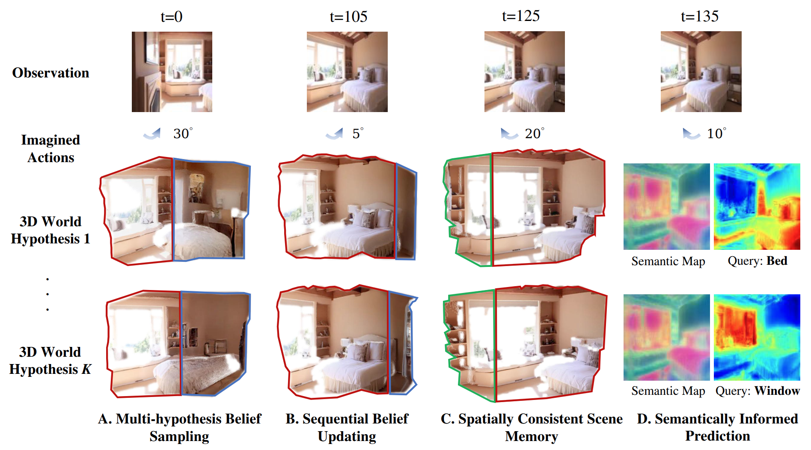

Recent advances in visual generative models have shown the promise of learning generative world models. However, prior work has largely focused on rendering novel views of observed scenes or predicting future frames. While these models achieve impressive visual quality, they are not optimized to support downstream embodied reasoning and planning tasks. In this work, we theorize what properties generative world models should have to enhance embodied agents. As a first step, we focus on modeling an agent's beliefs over the 3D world and identify several key capabilities. These include spatially consistent scene memory, multi-hypothesis belief sampling, sequential belief updating, and semantically informed future prediction. We then propose 3D-Belief, a generative 3D world model that instantiates these capabilities. Unlike prior work, 3D-Belief predicts unseen regions in an explicit, actionable 3D representation from partial observations and updates this belief online as new observations arrive. It enables embodied agents to reason about the 3D world under partial observability and make sequential decisions based on up-to-date beliefs. We evaluate 3D-Belief on a novel 3D imagination benchmark, 3D-CORE, and challenging object navigation tasks. Experimental results show that robots driven by 3D-Belief outperform those using state-of-the-art models in both simulations and the real world.

In this work, we studied how generative world models can better support embodied reasoning and planning, and identified key capabilities for practical 3D belief modeling. We then proposed 3D-Belief, which predicts unseen regions in an explicit 3D representation from partial observations and updates this belief online. Experimental results on contextual reasoning and object navigation have shown that 3D-Belief improved both success rate and efficiency over existing generative world models.
@inproceedings{yin20263dbelief,
title={3D-Belief: A Generative 3D World Model for Embodied Reasoning and Planning},
author={Yin, Yifan and Wen, Zehao and Chen, Jieneng and Zheng, Zehan and Dai, Nanru and Shi, Haojun and Ye, Suyu and Huang, Aydan and Zhang, Zheyuan and Yuille, Alan and Xie, Jianwen and Tewari, Ayush and Shu, Tianmin},
year={2026}
}